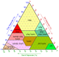

loam

Definition: Loam (in geology and soil science) is soil composed mostly of sand (particle size > 63 micrometres (0.0025 in)), silt (particle size > 2 micrometres (7.9×10−5 in)), and a smaller amount of clay (particle size < 2 micrometres (7.9×10−5 in)). By weight, its mineral composition is about 40–40–20% concentration of sand–silt–clay, respectively. These proportions can vary to a degree, however, and result in different types of loam soils: sandy loam, silty loam, clay loam, sandy clay loam, silty clay loam, and loam.In the United States Department of Agriculture, textural classification triangle, the only soil that is not predominantly sand, silt, or clay is called "loam". Loam soils generally contain more nutrients, moisture, and humus than sandy soils, have better drainage and infiltration of water and air than silt- and clay-rich soils, and are easier to till than clay soils. In fact, the primary definition of loam in most dictionaries is soils containing humus (organic content) with no mention of particle size or texture, and this definition is used by many gardeners. The different types of loam soils each have slightly different characteristics, with some draining liquids more efficiently than others. The soil's texture, especially its ability to retain nutrients and water, are crucial. Loam soil is suitable for growing most plant varieties.
Source: Wikipedia
Wikipedia Page (Something wrong with this association? Let us know.)
Wikidata Page (Something wrong with this association? Let us know.)
Occurs in: